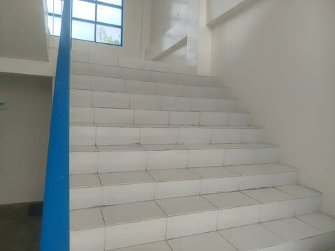
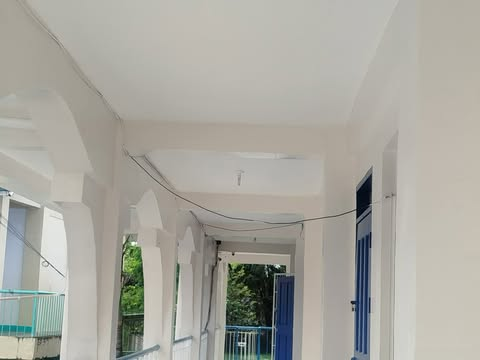

Library Building
Hallway
Stairs

There’s only one blue handrail on the left. If students are walking in groups or trying to pass each
other, some might have to use the right side where there’s nothing to hold onto. If they lose their
balance, they won’t have anything to stop themselves from falling.
Hanging Wires

The exposed wires are not covered or safely tucked away. If they get wet from rain coming through open
areas, or if a student accidentally touches them with bare hands or metal objects like water bottles,
there’s a serious chance of getting an electric shock that could cause bad harm